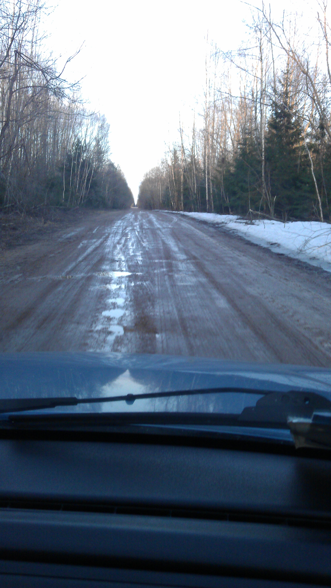
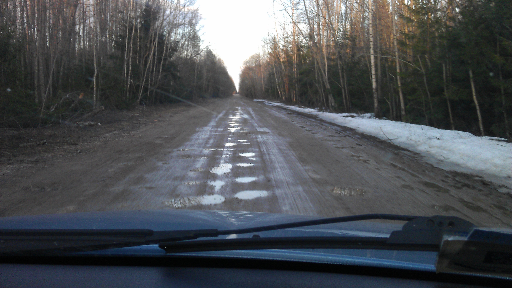

Путешествие в Кириши (РФ).
Карта путешествий
А117
Много ям, но можно еще лавировать.
Р41
Наихудший участок - Р41 на котором нам жутко повезло. На обычно л/а еще можно проехать, если земля еще не успела растаять. Дорога начиная с Е95 начинает постепенно ухудшаться. Сначала ям больше. Потом переходит в гравейку, потом в грунтовку.
Но впереди было еще хуже. Оказалось, что это магистраль прям. Дорога регионального значения.


Итог:
- оторванный от днища тросик ручного тормоза
- грязь везде в том числе в вентиляторе радиатора
- 2 раза подкладывали ветки.
Лучший маршрут: E95 - A120 - E105
А могло быть так:
Lisena: 27.04.2012 года была коварно заведена навигатором на эту же дорогу. Ехала на ВАЗ 2110 из Санкт-Петербурга в Кириши Л.О., навигатор настойчиво рекомендовал свернуть в Любани, после повората на Любани через 9 км дорога внезапно кончилась, началась грунтовка довольно таки не плохая. Проехав по ней 20-25 км в глухом лесу с мигрирующими жабами и парой брошенных машин на обочине, я вдруг оказалась в болоте по самые двери. Связи в этом чудо-лесу нет!!! В моем спасении было задействовано: Нисан, Уазик, Газель и Нива (Нива, при этом, была утоплена по стекла дверей) и 10 мужиков. Ночь прошла очень романтично, больше всех веселились жабы... А еще там ездили гаишники и искали пропавший на той же дороге Камаз. (Источник)
Comments
comments powered by Disqus